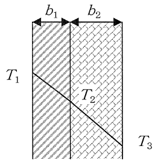

平成23年度 問30 化学プロセス
2種類の材料から構成される炉壁がある。内側は厚さb1=10 mmの耐火レンガで熱伝導率はk1=0.90 W・m-1・K-1、外側は厚さb2=20mmの断熱レンガで熱伝導率はk2=0.12 W・m-1・K-1である。炉壁の内外表面温度がそれぞれT1=1,200 K, T3=350 Kの場合、レンガの接触面温度T2に最も近いものは次のうちどれか。

①
03 K
②
917 K
③
,100 K
④
,150 K
⑤
,180 K
正答
④ ,150 K
この問題はフーリエの法則q＝－k（dT/dx）を用いて計算します。（dT/dx）は温度の変化量dTと距離の変化量dxの比であることを表します。つまり今回は温度減少量と伝熱距離の比に相当します。
- 耐火レンガの熱流束q1：-0.90×（1,200－T2）/ 0.010
- 断熱レンガの熱流束q2：-0.12×（T2-350）/ 0.020
熱流束qの単位Wm-2はWを変形してJ/(s・m2)とも記載できます。つまり熱流束は、ある断面に対して直交する方向に伝わる、単位時間当たりの熱量を意味します。そのため断熱材1と2のように密着して連続的に伝熱する状態では、各断熱材における熱流束q1とq2の値は同じとなります。
各断熱材における熱流束を求めた2式で方程式を解くとT2＝1,146.9℃と求まります。よって最も近いものは1,150℃です。